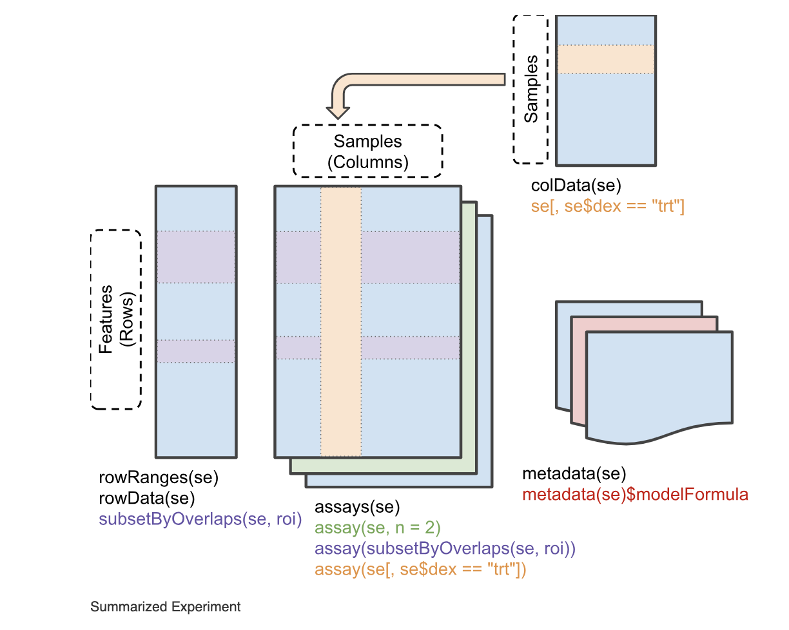
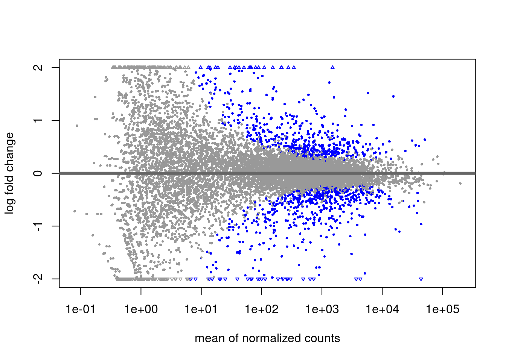
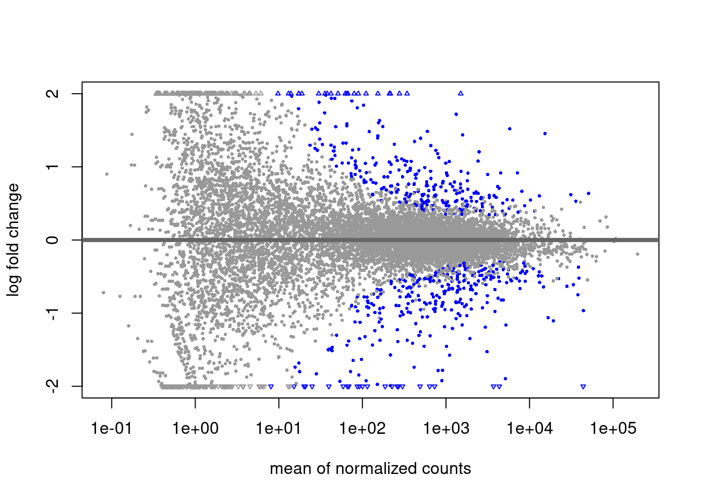
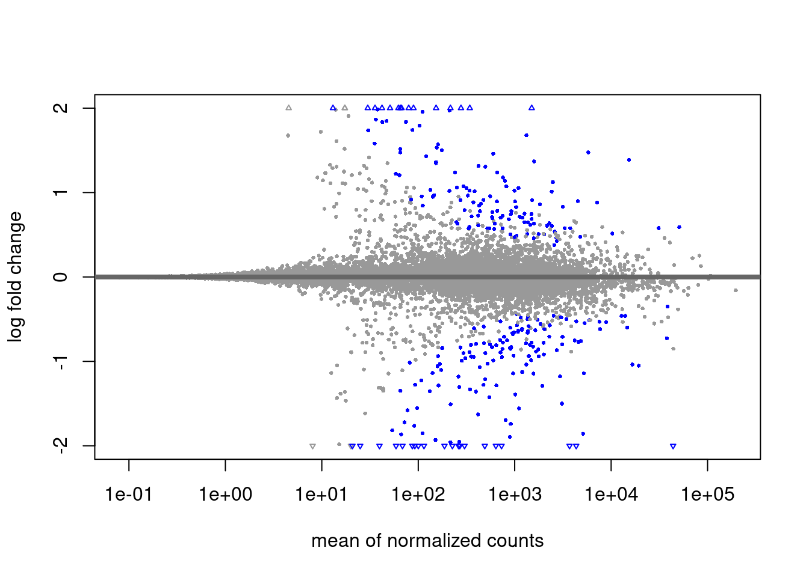
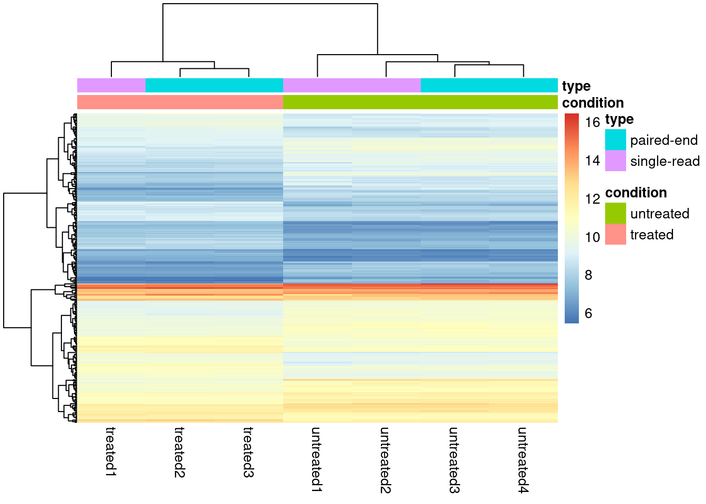
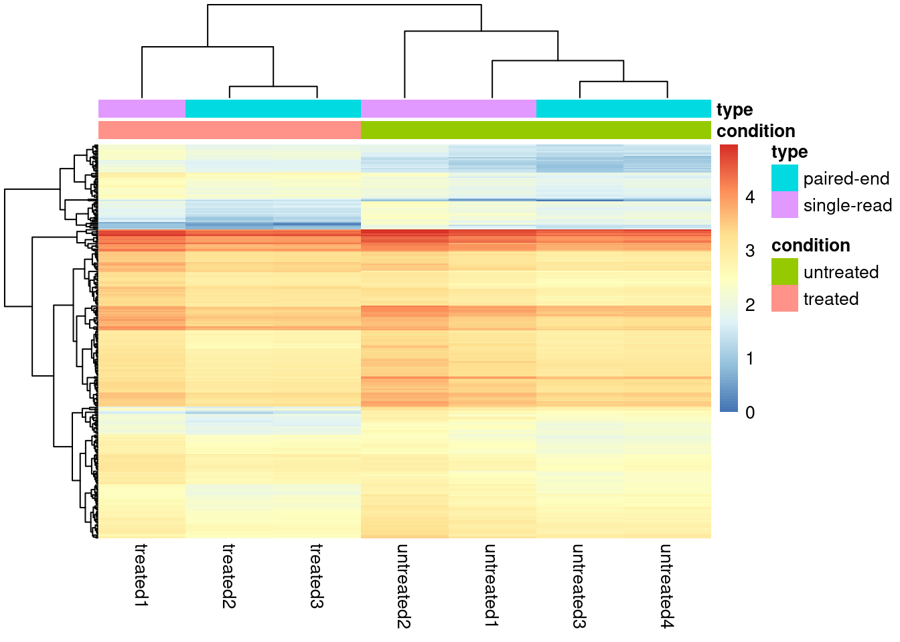
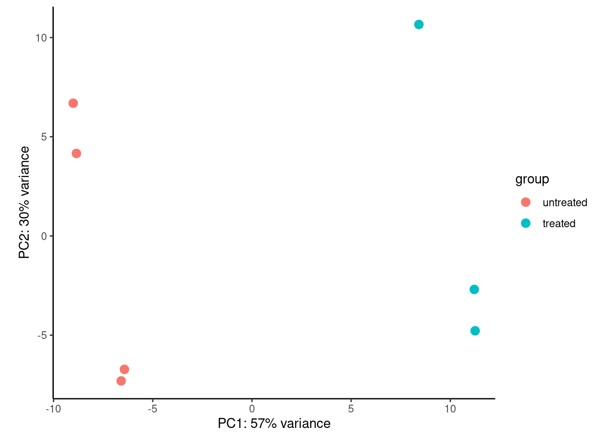
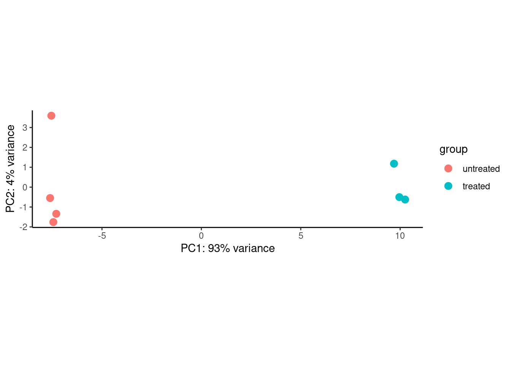

if (!requireNamespace("BiocManager", quietly = TRUE))
install.packages("BiocManager")
BiocManager::install("pasilla")
BiocManager::install("DESeq2")
BiocManager::install("apeglm")
BiocManager::install("pheatmap")
install.packages("tidyverse")DESeq2
Note
This document takes examples from the DESeq2 Vignette. This is by no means a comprehensive guide!
Workspace Setup
If you have not yet installed DESeq2, please do so for this walk through. We will also be using data from pasilla, which is a Drosophila dataset.
Data Import
We will start by finding the data packaged with the pasilla package. Accessing data within a package uses the system.file() function. If a package also contains a readable dataset from disk, it is conventionally, stored within a sub-directory of that package called extdata/. The system.file() function makes it easy to find these files.
library(DESeq2)
library(tidyverse)pasCts <- system.file("extdata",
"pasilla_gene_counts.tsv",
package="pasilla", mustWork=TRUE)
pasAnno <- system.file("extdata",
"pasilla_sample_annotation.csv",
package="pasilla", mustWork=TRUE)
cts <- as.matrix(read.csv(pasCts,sep="\t",row.names="gene_id"))
coldata <- read.csv(pasAnno, row.names=1)
coldata <- coldata[,c("condition","type")]
coldata$condition <- factor(coldata$condition)
coldata$type <- factor(coldata$type)Data Inspection
As programmers, we must always be thinking about where our data comes from and how to structure the data. Browsing through BioConductor, we find the following information about the pasilla package.
Data package with per-exon and per-gene read counts of RNA-seq samples of Pasilla knock-down by Brooks et al., Genome Research 2011.
So lets inspect the data and see if this makes sense!
Important
The data we loaded has already been processed from the instrument output. Loosely speaking, we are working on the downstream portion of our analysis pipeline.
If you have raw sequencing files (.bam/.fastq/.h5), you may still need to process these files into “raw counts” or whatever downstream data output that R can handle for analysis.
dim(cts)[1] 14599 7cts[1:10,] untreated1 untreated2 untreated3 untreated4 treated1 treated2
FBgn0000003 0 0 0 0 0 0
FBgn0000008 92 161 76 70 140 88
FBgn0000014 5 1 0 0 4 0
FBgn0000015 0 2 1 2 1 0
FBgn0000017 4664 8714 3564 3150 6205 3072
FBgn0000018 583 761 245 310 722 299
FBgn0000022 0 1 0 0 0 0
FBgn0000024 10 11 3 3 10 7
FBgn0000028 0 1 0 0 0 1
FBgn0000032 1446 1713 615 672 1698 696
treated3
FBgn0000003 1
FBgn0000008 70
FBgn0000014 0
FBgn0000015 0
FBgn0000017 3334
FBgn0000018 308
FBgn0000022 0
FBgn0000024 5
FBgn0000028 1
FBgn0000032 757coldata condition type
treated1fb treated single-read
treated2fb treated paired-end
treated3fb treated paired-end
untreated1fb untreated single-read
untreated2fb untreated single-read
untreated3fb untreated paired-end
untreated4fb untreated paired-endThe data seems simple enough!
The SummarizedExperiment Class
Before we continue, lets get an idea of the kind of data structure we will be working with. DESeq2 objects extend a common data structure from BioConductor called a SummarizedExperiment. Below is the general structure of the object.

tidyverse vs BioConductor
This convention is different from that of the tidyverse whose functions tend to operate on data.frame objects. The SummarizedExperiment object is a compressed form of data.
rbind(
colnames(cts),
rownames(coldata)
) [,1] [,2] [,3] [,4] [,5]
[1,] "untreated1" "untreated2" "untreated3" "untreated4" "treated1"
[2,] "treated1fb" "treated2fb" "treated3fb" "untreated1fb" "untreated2fb"
[,6] [,7]
[1,] "treated2" "treated3"
[2,] "untreated3fb" "untreated4fb"
Important
They do not match and they are not in order! Consider using lessons from class 5-6
rownames(coldata) <- sub("fb", "", rownames(coldata))
coldata <- coldata[colnames(cts),]
# check again visually
rbind(
colnames(cts),
rownames(coldata)
) [,1] [,2] [,3] [,4] [,5] [,6]
[1,] "untreated1" "untreated2" "untreated3" "untreated4" "treated1" "treated2"
[2,] "untreated1" "untreated2" "untreated3" "untreated4" "treated1" "treated2"
[,7]
[1,] "treated3"
[2,] "treated3"
Challenge
We rearranged our data so that we could gaurentee that they would be in the correct order. We “verified” this visually. Can you write up a way to check that the two name vectors are in order, without visually checking? Consider our discussions on Logical Operators and all() or any(). Don’t forget to check your help documentation!
The DESeqDataSet (dds)
Now that our data is ordered we are almost ready to use DESeq2. We should first recall what is the goal of our experimental analysis. DESeq2 is intended to compare experimental conditions effect on transcription counts. Thus in doing so, we are required to specify our model design with DESeq2.
Model Designs in R
R represents modeling with ~. You may see this in the following forms:
y ~ x~ x
The style used generally depends on the function.
The right hand side can contain multiple co-variates and would look something like: y ~ x + z
count(coldata, condition) condition n
1 treated 3
2 untreated 4coldata$condition <- factor(
coldata$condition,
levels = c("untreated", "treated"))
dds <- DESeqDataSetFromMatrix(
countData = cts,
colData = coldata,
design = ~ condition
)
# not necessary, just to put something here
rowData(dds)$gene <- rownames(dds)
ddsclass: DESeqDataSet
dim: 14599 7
metadata(1): version
assays(1): counts
rownames(14599): FBgn0000003 FBgn0000008 ... FBgn0261574 FBgn0261575
rowData names(1): gene
colnames(7): untreated1 untreated2 ... treated2 treated3
colData names(2): condition typeThe Most Important Commands
dds_out <- DESeq(dds)
res <- results(dds_out)
reslog2 fold change (MLE): condition treated vs untreated
Wald test p-value: condition treated vs untreated
DataFrame with 14599 rows and 6 columns
baseMean log2FoldChange lfcSE stat pvalue
<numeric> <numeric> <numeric> <numeric> <numeric>
FBgn0000003 0.171569 1.02601368 3.805512 0.26961255 0.7874583
FBgn0000008 95.144079 0.00215176 0.223884 0.00961105 0.9923316
FBgn0000014 1.056572 -0.49673518 2.160266 -0.22994168 0.8181371
FBgn0000015 0.846723 -1.88276477 2.106433 -0.89381654 0.3714201
FBgn0000017 4352.592899 -0.24002504 0.126024 -1.90459122 0.0568332
... ... ... ... ... ...
FBgn0261571 8.73437e-02 0.9002686 3.810173 0.2362802 0.813215
FBgn0261572 6.19714e+00 -0.9591300 0.777017 -1.2343750 0.217063
FBgn0261573 2.24098e+03 0.0126160 0.112701 0.1119424 0.910869
FBgn0261574 4.85774e+03 0.0152573 0.193148 0.0789928 0.937038
FBgn0261575 1.06836e+01 0.1635624 0.938910 0.1742046 0.861705
padj
<numeric>
FBgn0000003 NA
FBgn0000008 0.996928
FBgn0000014 NA
FBgn0000015 NA
FBgn0000017 0.282364
... ...
FBgn0261571 NA
FBgn0261572 NA
FBgn0261573 0.982037
FBgn0261574 0.988142
FBgn0261575 0.967914
Tip
Congratulations! You have completed you first Differential Expression RNAseq Analysis!
LFC Shrinkage
Shrinkage in the world of statistics generally means to reduce variance in our parameter estimations. The Log Fold Change we calculate between these two groups are based on sample sizes 3 and 4 for 14,000 different Genes. This isn’t too many samples to get a sense of the underlying distribution. Thus shrinkage will help reduce variation in samples that may be large by pure chance.
res_shrink <- lfcShrink(
dds_out,
coef="condition_treated_vs_untreated",
type="apeglm")
res_shrinklog2 fold change (MAP): condition treated vs untreated
Wald test p-value: condition treated vs untreated
DataFrame with 14599 rows and 5 columns
baseMean log2FoldChange lfcSE pvalue padj
<numeric> <numeric> <numeric> <numeric> <numeric>
FBgn0000003 0.171569 0.00697965 0.205785 0.7874583 NA
FBgn0000008 95.144079 0.00111536 0.151706 0.9923316 0.996928
FBgn0000014 1.056572 -0.00463413 0.204895 0.8181371 NA
FBgn0000015 0.846723 -0.01814841 0.206177 0.3714201 NA
FBgn0000017 4352.592899 -0.19112618 0.120176 0.0568332 0.282364
... ... ... ... ... ...
FBgn0261571 8.73437e-02 0.00584152 0.2057279 0.813215 NA
FBgn0261572 6.19714e+00 -0.06510177 0.2133912 0.217063 NA
FBgn0261573 2.24098e+03 0.00972655 0.0989017 0.910869 0.982037
FBgn0261574 4.85774e+03 0.00925643 0.1409021 0.937038 0.988142
FBgn0261575 1.06836e+01 0.00791456 0.2009952 0.861705 0.967914
Challenge
See if you can compare the LFG values between res and res_shrink. Are they smaller? larger? See if you can create a scatter plot between these two vectors.
for an easy plot, consider
plot(x, y)where x is the LFG in one result, and y is the LFG in the other result
Plotting
MA plot
# alpha is set to 0.1 by default
plotMA(res, ylim = c(-2, 2))
plotMA(res, ylim = c(-2, 2), alpha = .01)
plotMA(res_shrink, ylim = c(-2, 2), alpha = .0001)
Significance Values
The alpha threshold for declaring significance can feel arbitrary at times. This is likely the largest criticism from Bayesian statisticians.
We will not cover theory on power estimations for reasonable alpha thresholds. This value should however be decided on ahead of time (ideally when planning the experiment’s design!)
Saving output
Lets assume that we settled on a alpha threshold of 0.0001 for this data and we intend to use the shrunk results. Lets subset this data and write that to disk!
res_subset <- res_shrink %>%
as_tibble(rownames = "gene") %>%
filter(padj < 0.0001 & !is.na(padj))write.csv(res_subset, "deseq2-sig-results.csv")Heatmap
library(pheatmap)For visualizing data in a heatmap, it may not be very effective to show the raw counts as some genes may have very low counts, and others may have 10s of thousands. For this reason we may visualize data with a transformation. DESeq2 has a function called vst() (variance stabalizing transform) that we can call on a dds object.
dds_out_vst <- vst(dds_out)
dds_out_vst_sub <- dds_out_vst[rownames(dds) %in% res_subset$gene,]
pheatmap(assay(dds_out_vst_sub), cluster_rows = TRUE,
show_rownames = FALSE,
annotation_col = as.data.frame(colData(dds_out_vst_sub)[,c("condition","type")])
)
Alternatively a quick solution is to push our data through a log transform
dds_sub <- dds_out[rownames(dds) %in% res_subset$gene,]
assays(dds_sub)$log <- log10(assay(dds_sub))
pheatmap::pheatmap(assay(dds_sub, "log"), cluster_rows = TRUE,
show_rownames = FALSE,
annotation_col = as.data.frame(colData(dds_sub)[,c("condition","type")])
)
PCA
Similarly we generally use transformed/scaled values for PCA as extremely large values will dominate the variance we may want to capture.
plotPCA(dds_out_vst) +
theme_classic()
plotPCA(dds_out_vst_sub) +
theme_classic()
Note for PCA
PCA is very sensitive to the data provided. In other words, the resulting dimensions may change drastically